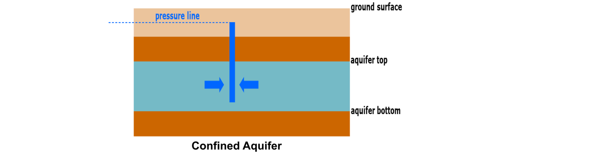
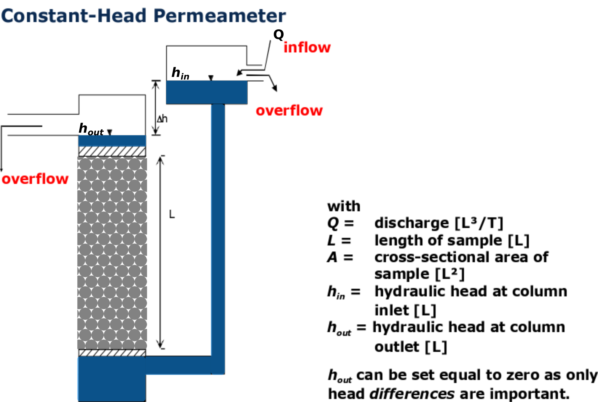
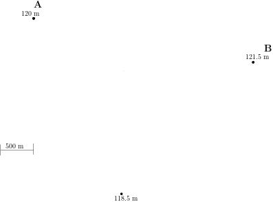
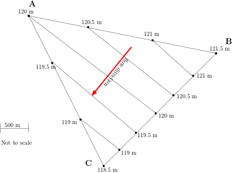
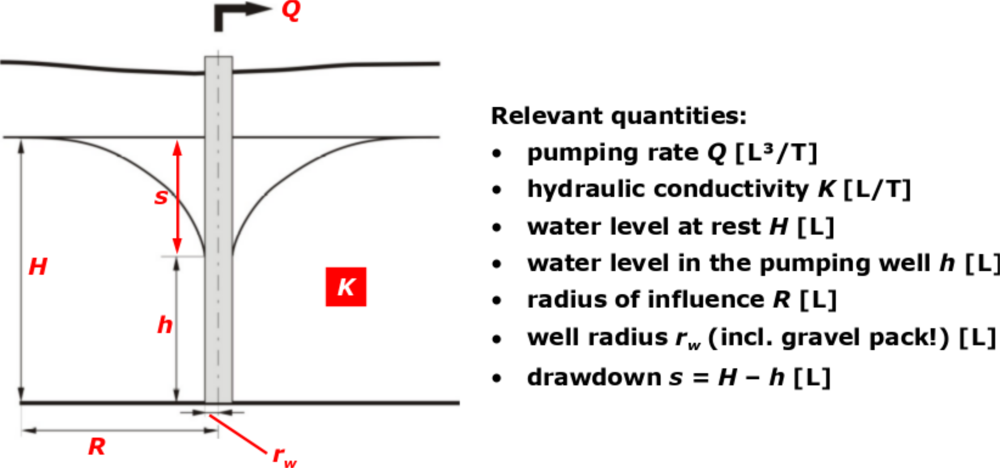
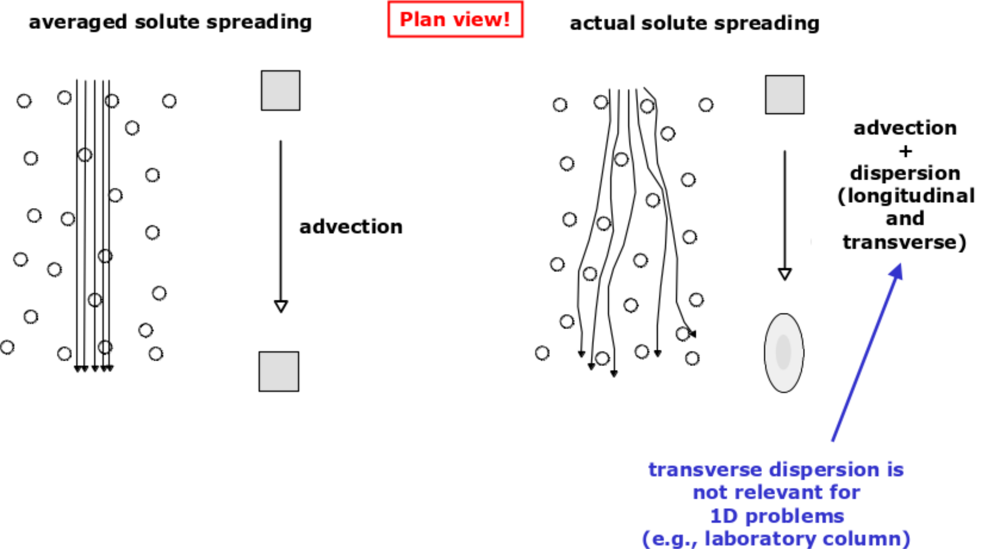
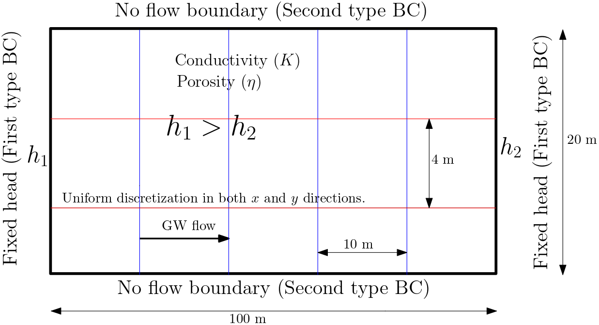

Groundwater Exam Solution - 2019-2020
1. Groundwater Exam Solution - 2019-2020#
(The contents presented in this section were re-developed principally by Dr. P. K. Yadav with supervision from Prof. Rudolf Liedl)
Q1. Aquifer Types (ca. 5 pts.)
a. Differentiate between Aquifer, Aquitard and Aquiclude (3 points)
b. Schematically present a confined aquifer (vertical cross-section) providing essential features with their legends (2 points)
Solution 1. a.
See slide: L03/08
An aquifer or a groundwater reservoir can store and transmit significant (= exploitable) amounts of groundwater.
An aquitard can store and transmit groundwater but to a much lesser extent than an (adjacent) aquifer.
An aquiclude can store groundwater but cannot transmit groundwater.
Solution 1b - (L03/11)

{kind=link}
Confined Aquifer
The essential feature of confined aquifer is provided in the figure above.
Q2. Groundwater storage (3 pts.)
Dry season in Dresden (2018-19) led to intense extraction of groundawater in rural areas. At one location in a confined aquifer (storage coeff. 4·10-4, total porosity = 30%), the pressure head was lowered by 150 m. The thickness of the aquifer was measured to be 90 m before the beginning of extraction and the compressibility of the porous medium in that region is estimated 6·10-8 m2/N. Density of water can be assumed to be 1000 kg/m3.
(Hint: \(\Delta V_T = \alpha_{pm}\cdot\rho_w \cdot g \cdot V_T \cdot \Delta \psi \)).
a. Approximately how much water was extracted? (1 point)
b. How much land subsidence due to water extraction is expected? (2 point)
Solution 2
Given relation:
For part a. (see Tut 02/P4)
\( S_s = \frac{\Delta V_w}{V_T\cdot \Delta \psi} \)
In confined aquifer \(S\) is used, which is obtained from:
\(S = S_s \cdot m\)
\( \frac{S}{m} = \frac{\Delta V_w}{A_T\cdot m \cdot \Delta \psi} \)
So,
\( \frac{\Delta V_w}{A} = S \cdot \Delta \psi\)
For part b.
\(\Delta V_T = \alpha_{pm}\cdot\rho_w \cdot g \cdot V_T \cdot \Delta \psi \)
\(V_T = A\times h\), with \(A\) surface area and \(h\) aquifer thickness.
\(\Delta V_T = A \times \Delta h\), with \(\Delta h\) change in thickness.
\(A \times \Delta h= \alpha_{pm}\cdot\rho_w \cdot g \cdot A \cdot h \cdot \Delta \psi \)
\(\Delta h = \alpha_{pm}\cdot\rho_w \cdot g \cdot h \cdot \Delta \psi\), with \(\Delta h\) being the land subsidence
# solution 2 a
# Given
A = 1 # m², assuming 1 m² aquifer area
h = 90 # m, aquifer height before extraction
d_psi = 150 # m, change in pressure head
S_2 = 4*10**-4 # specific storage
rho_w = 1000 # Kg/m³, density of water
a_pm = 6* 10**-8 # m²/N = m-s²/kg, compressibility of porous medium
g = 9.81 # m/s², gravity factor
#Solution
d_V_w = S_2*A*d_psi
print("The water abstraction volume per m\u00b2 aquifer is {0:0.3f}".format(d_V_w), "m\u00b3")
The water abstraction volume per m² aquifer is 0.060 m³
# solution 2 b
# Given
A = 1 # m², assuming 1 m² aquifer area
h = 90 # m, aquifer height before extraction
d_psi = 150 # m, change in pressure head
Ss = 4*10**-4 # specific storage
rho_w = 1000 # Kg/m³, density of water
a_pm = 6* 10**-8 # m²/N = m-s²/kg, compressibility of porous medium
g = 9.81 # m/s², gravity factor
#interim calculation
V_T = A*h # m³, Aquifer volume before extraction
#Solution
d_h = a_pm*rho_w*g*h*d_psi
print("The water abstraction volume is {0:0.2f}".format(d_h), "m")
The water abstraction volume is 7.95 m
Q3. Aquifer Properties (ca. 10 pts.)
The hydraulic conductivity of a sample (length 15 cm, diameter 5 cm) is to be determined using a constant-head permeameter. For that 250 ml water is passed through the sample in 30 s while maintaining the head difference of 2.5 cm. Properties of water provided are: density of water at 20°C: 1000 kg/m3; dynamic viscosity of water at 20°C: 1.0087·10-3 Pa·s
a. Sketch the problem as accurately as possible providing essential features with legends (3 points)
b. What will be the conductivity of the sample? (4 points)
What is the intrinsic permeability of the sample? (2 points)
c. What soil type is likely the sample? (1 point)
(Hint: For the calculation of permeability, dynamic viscosity/density ratio is required.)
Solution 3 -
Solution 3a (L05/15)

{kind=link}
#Solution 3b** (L05/15)
# Given
L_c = 15 # cm, column length
Dia_c = 5 # cm, diameter column
V_in= 250 # mL, water entering the column
t_c = 30 # s, time required to pass
d_3h = 2.5 # cm, head difference
# interim calculation
A_c = np.pi*Dia_c**2/4 # cm², Area of column
Q_c = V_in/t_c # cm³/s, assume 1mL = 1 cm³, Discharge out of column
#solution
K_c = (Q_c*L_c)/(A_c*d_3h) # cm/s, conductivity
print("The area of the column is {0:0.2f}".format(A_c), "cm\u00b2")
print("The discharge from the aquifer is {0:0.2f}".format(Q_c), "cm\u00b3/s")
print("The conductivity of the sample is {0:0.2f}".format(K_c), "cm/s")
print("The conductivity of the sample is {0:0.4f}".format(K_c/100), "m/s")
The area of the column is 19.63 cm²
The discharge from the aquifer is 8.33 cm³/s
The conductivity of the sample is 2.55 cm/s
The conductivity of the sample is 0.0255 m/s
#Solution 3c** (L05/18)
# Given
K_m = K_c/100 # m/s, conductivity
rho_3w = 1000 # Kg/m³, density of water
nu_w = 1.0087*10**-3 # Pa-s = Kg/m-s, dynamic viscosity
g = 9.81 # m/s², gravity factor
#solution
k_c = K_m*nu_w/(rho_3w*g)
print("The permeability of the sample is {0:0.10f}".format(k_c), "m\u00b2")
print("The permeability of the sample is {0:0.2E}".format(k_c), "m\u00b2")
The permeability of the sample is 0.0000000026 m²
The permeability of the sample is 2.62E-09 m²
Solution 3d (L05/11)
The sample in the column is likely gravel or coarse sand.
Q4. Sieve Analysis (ca. 6 pts.)
Sieve experiments were performed with the bore samples and the following observations were obtained:
mesh diameter [mm] |
residue in the sieve [g] |
Σ total |
Σ/Σtotal |
|---|---|---|---|
6 |
0 |
||
2 |
40 |
||
0.6 |
250 |
||
0.2 |
150 |
||
0.06 |
60 |
||
<0.06 (cup) |
10 |
a. Draw the granulometric curve in the diagram below. (ca. 5 pts.)
b. Briefly characterise the sediment. (ca. 1 pt.)
#Solution 4 -(L03/18)
dia = [6,2,0.6,0.2, 0.06, 0.001] # mm, diameter <0.06 (cup)= 0.001
mass = [0, 40, 250, 150, 60, 10] # g, the residue in seive
# Calculation steps - filling table
Total_mass = np.sum(mass) # add the mass column to get total mass
retain_per = mass/Total_mass*100 # retain percentage
retain_per_cumsum = np.cumsum(retain_per) # get the cummulative sum of the reatined
passing_per = 100 - retain_per_cumsum # substract 100-cummsum to get passing %
data = {"mesh diameter [mm]": dia, "residue in the sieve [g]": mass, "Σtotal": retain_per, "Σ/Σtotal": passing_per }
df1= pd.DataFrame(data)
df1
| mesh diameter [mm] | residue in the sieve [g] | Σtotal | Σ/Σtotal | |
|---|---|---|---|---|
| 0 | 6.000 | 0 | 0.000000 | 100.000000 |
| 1 | 2.000 | 40 | 7.843137 | 92.156863 |
| 2 | 0.600 | 250 | 49.019608 | 43.137255 |
| 3 | 0.200 | 150 | 29.411765 | 13.725490 |
| 4 | 0.060 | 60 | 11.764706 | 1.960784 |
| 5 | 0.001 | 10 | 1.960784 | 0.000000 |
# plotting
plt.rcParams['axes.linewidth']=2
#plt.rcParams["axes.edgecolor"]='white'
plt.rcParams['grid.linestyle']='--'
plt.rcParams['grid.linewidth']=1
x = np.append([10],dia) # adding data to extend over 6 mm dia
y = np.append([100],passing_per) # adding 100% to plot
fig = plt.figure(figsize=(9,6))
plt.semilogx(x, y, 'x-', color='red')
tics=x.tolist()
plt.grid(which='major', color='k', alpha=0.7)
plt.grid(which='minor', color='k', alpha=0.3)
plt.xticks(x, tics);
plt.yticks(np.arange(0,110,10));
plt.title('grain size distribution');
plt.xlabel('grain size d [mm]');
plt.ylabel('grain fraction < d ins % of total mass');
solution 4b
The sample can be considered uniformly distributed as over 70% of sample falls in the sand size (0.2 mm-2 mm). Therefore, the sample can be considered sandy.
Q5. Aquifer characterization (ca. 8 pts.)
Water levels in m a.s.l. were measured at three observation wells (see figure).
{kind=link}
a. Sketch hydraulic head isolines for increments of 0.5 m. (ca. 3 points.)
b. Gravel layer (thickness (t1) = 1.5 m, and conductivity (K1) = 3.7 10-3 is embedded between two sandy layers (t2 = 2 m, K2 = 3·10-4 m/s; and t3 = 3 m, K3 = 4·10-4 m/s). If the hydraulic gradient is 1% and overall discharge is 1 m3/d per unit width of the aquifer, find the effective hydraulic conductivity considering a parallelly layered aquifer.
(Hint: \(K_{eff} = \frac{m}{\sum_{i=1}^n \frac{m_i}{K_i}}\) or \(K_{eff} = \sum_{i=1}^n\frac{m_i\cdot K_i}{m}\) ) (ca. 2 points)
c. Distinguish between homogeneity and heterogeneity, and isotropy and anisotropy (ca. 3 points)
Solution 5a (L07/08-09)
The isolines and flow direction is provided in the figure below.
{kind=link}
# Solution 5b (L06/08-13)
# Given:
G_t1 = 2 # m, sandy layer top
G_t2 = 1.5 # m, gravel layer middle
G_t3 = 3 # m, sandy layer bottom
K_1 = 3.0*10**-4 # m/s cond. in G_t1
K_2 = 3.7*10**-3 # m/s cond. in G_t2
K_3 = 4.0*10**-4 # m/s cond. in G_t3
i = 1/100 # (), hydraulic gradient 1%
Q_5 = 1 # m³/d per-W, discharge per unit width
#intermediate calculation
m = G_t1+G_t2+G_t3 # m, total aq. thickness
K_ef_h = (1/m) * (G_t1*K_1 + G_t2*K_2 + G_t3*K_3) # m/s, eff. horizontal cond.
K_ef_v = m/(G_t1/K_1 + G_t2/K_2 + G_t3/K_3) # # m/s, eff. vertical cond.
print("The thickness of the aquifer is {0:0.3f}".format(m), "m")
print("The effective horizontal conductivity of the aquifer is {0:0.2E}".format(K_ef_h), "m/s")
print("The effective vertical conductivity of the aquifer is {0:0.2E}".format(K_ef_v), "m/s")
The thickness of the aquifer is 6.500 m
The effective horizontal conductivity of the aquifer is 1.13E-03 m/s
The effective vertical conductivity of the aquifer is 4.46E-04 m/s
Solution 5c (L06/23)
Homogeneity: An aquifer is homogeneous when its parameters are constant throughout the porous medium, i.e. the properties of the medium are independent of space
Heterogeneity: Heterogeneous aquifer have its properties varies in space or the properties are space dependent.
Isotropy: This relates to properties of aquifer being independent of direction, i.e., \(K_v = K_h\)
Anisotropy: In this case the aquifer properties are direction dependent, i.e., \(K_v \neq K_h\).
Q6. Well (ca. 5 pts.)
a. Sketch the pumping scenario of an unconfined aquifer (vertical cross section) and label all possible quantities (ca 3 pts.)
b. The conductivity of a confined aquifer (8 m thick) is estimated to be \(4\cdot 10^{-4}\) m/s. If the steady-state discharge 50 m3/s, using the Theis equation (\(s = Q/4\pi T·W(u)\), with \(W(u) = 15\)), find the drawdown in the aquifer. (2 points)
Solution 6a (L08/16)
Figure below presents the scenario of a well in an unconfined aquifer.
{kind=link}
#Solution 6b
#Given
Q_6 = 50 # m³/s, discharge
K_6 = 4*10**-4 # m/s, conductivity
m_6 = 8 # m, thickness
W_u = 15 # (), well function
# interim cal.
T_6 = K_6 * m_6 # m²/s, Transmissivity T = K*m
# solution
s_6 = (Q_6/(4*np.pi*T_6)) * W_u # m, drawdown
print("The Transmissivity of the aquifer is {0:0.5f}".format(T_6), "m\u00b2/s")
print("The drawdown in the well is {0:0.2f}".format(s_6), "m")
The Transmissivity of the aquifer is 0.00320 m²/s
The drawdown in the well is 18650.97 m
Q7. Conservative Transport (ca. 7 pts.)
a. How is reactive transport different to conservative transport in the aquifers. (2 points)
b. With suitable sketch distinguish between advective flux and dispersive flux. (2 points)
c. A column (L = 1.2 m and Ø = 5 cm) was packed with sandy soil (ne= 35% K= 0,0002 m/s). The hydraulic head at the inlet and the outlet was set to 230 m and 235 m, resp. The NaCl solution with conc. 10 mg/L was steadily introduced to the column after saturating it with distilled water. The experiment condition was such that diffusive flow could be neglected. You may make justified assumption for any missing information.
c.i. What will be the advective mass flux at the outlet of the column? (1.5 points)
c.ii. Considering initial concentration difference between inlet and outlet to be 10 mg/L, what will be the dispersive mass flux at the outlet? (1.5 points)
(Hint: Dispersive and Advective fluxes are either of \( n_e \cdot v\cdot C\) and \(n_e\cdot \alpha \cdot v \cdot \Delta C/L\))
Solution 7a (L09/05)
A chemical in groundwater is subject to conservative transport processes if there is:
no interaction with the solid material,
no interaction with other chemicals,
no interaction with microbes.
When either of the above are part of the groundwater, the transport process is reactive.
Solution 7b (L09/09)
The sketch below distinguish between advective and dispersive fluxes. The figure in the left is of advective process and that in the right results to dispersive flux.
{kind=link}
#Solution 7c
L_7 = 1.2 # m, col. length
Dia_7 = 5 # cm, col. diameter
ne_7 = 0.35 # (), effective porosity
K_7 = 0.0002 # m/s, conductivity
H_7in = 235 # m, head inlet
H_7out = 230 # m, head outlet
C_7 = 10 # mg/L, NaCl concentration
al_7 = 1 # m, assumed
C_7d = 10 # mg/L
#intermediate calc.
i_7 = (H_7in-H_7out)/L_7 # (), head gradient
v_7dar = K_7*i_7 # m/s, darcy velocity
v_7av = v_7dar/ne_7 # m/s, average linear velocity
# Solution
F_7ad = ne_7*v_7av*C_7 # mg-m/L-s, advective flux
F_7dis = ne_7*al_7*v_7av*C_7d/L_7 # mg-m/L-s, dispersive flux
print("The hydraulic gradient is {0:0.4f}".format(i_7), "")
print("The Darcy velocity is {0:0.4f}".format(v_7dar), "m/s")
print("The average linear velocity is {0:0.4f}".format(v_7av), "m/s")
print("The advective flux is {0:0.10f}".format(F_7ad), "mg-m/L-s")
print("The dispersive flux is {0:0.10f}".format(F_7dis), "mg-m/L-s")
The hydraulic gradient is 4.1667
The Darcy velocity is 0.0008 m/s
The average linear velocity is 0.0024 m/s
The advective flux is 0.0083333333 mg-m/L-s
The dispersive flux is 0.0069444444 mg-m/L-s
Q8. Sorption Isotherms (ca. 10 pts)
Five batch tests (different initial concentrations – see table below) were performed to determine the sorption properties of a sediment. For each batch 20 g of sediment in 30 mL of water were used. The measured equilibrium solute concentrations are also provided in the table.
a) Complete the above table (ca. 3 pts.)
b) Plot the results in the diagram below and draw a Henry isotherm (ca. 3 pts.)
c) How is retardation related to isotherm (ca. 2 points) (value and unit!) (ca. 2 pts.).
head = ["Batch nr. ", "Initial Conc. (mg/L) ", "Equi. Conc. (mg/L)", "Sorbed mass (g)", "Sorbed mass/solid (mg/g)" ]
bn = np.array([1,2,3,4,5])
C_0 = np.array([5, 10, 15, 20, 25])# mg/L, initial conc.
C_eq = np.array([2.5, 4.9, 8, 9.8, 13.2])# mg/L, equilibrium conc.
s2 = ips.sheet(rows=6, columns=5, row_headers=False, column_headers=head)
ips.column(0, bn, row_start=0)
ips.column(1, C_0, row_start=0)
ips.column(2, C_eq, row_start=0);
s2
# SOlution of Problem 10 a (T07/HP9)
# Given
v_ml = 30 # ml of water used in expt.
v_l = v_ml/1000 # L, unit conversion
m_s = 20 # g, solid mass used in expt.
bn = np.array([1,2,3,4,5])
C_0 = np.array([5, 10, 15, 20, 25])# mg/L, initial conc.
C_eq = np.array([2.5, 4.9, 8, 9.8, 13.2])# mg/L, equilibrium conc.
s_m = (C_0-C_eq)*v_l
m_m = s_m/m_s# mg/g, mass ratio
#output
d8 = {"Batch Nr": bn, "Initial Conc. (mg/L)": C_0, "Equi. Conc. (mg/L)": C_eq, "Sorbed mass (g)": s_m, "Sorbed mass/solid (mg/g)" :m_m}
df9 = pd.DataFrame(d8); df9
| Batch Nr | Initial Conc. (mg/L) | Equi. Conc. (mg/L) | Sorbed mass (g) | Sorbed mass/solid (mg/g) | |
|---|---|---|---|---|---|
| 0 | 1 | 5 | 2.5 | 0.075 | 0.00375 |
| 1 | 2 | 10 | 4.9 | 0.153 | 0.00765 |
| 2 | 3 | 15 | 8.0 | 0.210 | 0.01050 |
| 3 | 4 | 20 | 9.8 | 0.306 | 0.01530 |
| 4 | 5 | 25 | 13.2 | 0.354 | 0.01770 |
# Solution of proble 10 (b) (T07/HP9)
# fit
slope, intercept, r_value, p_value, std_err = stats.linregress(C_eq, m_m) # linear regression
#plot and fit
fig = plt.figure(); plt.plot(C_eq, m_m, 'bo', label=' provided data');
pred = intercept + slope*C_eq # fit line
plt.plot(C_eq, pred, 'r', label='y={:.2E}x+{:.2f}'.format(slope,intercept)) ;
plt.xlabel(r"$C_{eq} $ mg/L"); plt.ylabel(r"$C_{a} $ mg/g");
plt.grid(); plt.legend(fontsize=11); plt.text(2.2, 0.014,'$R^2 = %0.2f$' % r_value)
plt.text(2.2, 0.012,'$C_a = K_{d}\cdot C_{eq}$');
solution 8c (L10/13)
The following relation relates Retardation (\(R\)) with linear isotherm (\(K_d\))
with effective porosity \(n_e\), solid density \(\rho_s\).
Q9. Groundwater Modelling (ca. 8 points.)
a. Distinguish between conceptual model and mathematical model; and between analytical solution and empirical solution (ca. 4 points).
b. Draw a conceptual model for a rectangular aquifer 100 m long and 20 m wide. Discretize the domain with 1/10 of the length length-wise and 1/5 of the width width-wise. Assure that flow in the model is from left to right direction (ca. 3 points).
c. How is a no-flow boundary condition mathematically defined? (ca. 1 point)
Solution 9a (L11/04-06)
A model or also a conceptual model is a representation, an image or a description of a real system.
example for a real system: porous medium with water flowing through the pores (Darcy experiment)
A mathematical model provides a quantitative representation of the relevant system components, processes and impacts in the area of investigation. The quantitative representation is based on mathematical equations.
Analytical solution : These are exact mathematical expressions solving the model equations.
Emperical solution : These are solution based on experimental results.
Solution 9b - (L14/12)
{kind=link}
Solution 9c (L13/16)
A no-flow boundary condition is special case of second type or Neumann boundary condition. For no flow condition head gradient is equated to zero, i.e., there is no gradient and thus no flow (water flows from high to low head). Mathematically, this is:
\(\frac{dh}{dx} = 0 \) for no-flow along \(x-\)axis, with \(h\) representing head.
Good Luck.